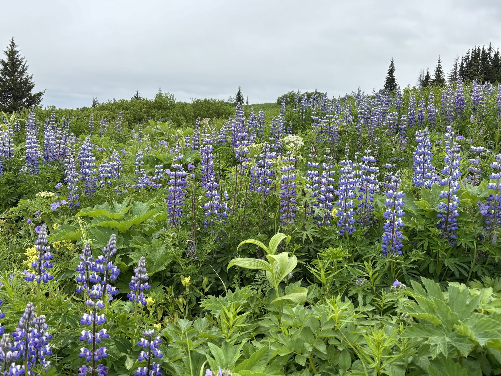
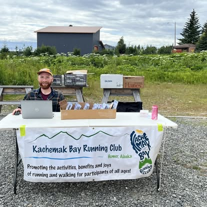

Miles on the bay
We are runners, walkers, parents, kids and neighbors who believe Homer is one of the most beautiful places on earth to move your feet.
Built by the community, for the community
The Kachemak Bay Running Club is a 501(c)(3) nonprofit whose mission is to promote the activities, benefits and joys of running and walking for participants of all ages. As a proud member of the Road Runners Club of America, we welcome everyone, from recreational walkers to elite competitors and everyone in between.
Throughout the year we host everything from Family Fun Runs to timed events like the Spit Run, the Cosmic Hamlet Half Marathon and the alpine Mountain Classic, plus training programs to help you reach your goals. Race proceeds return to the community and support youth running across the southern Kenai Peninsula.

More than a finish time
Inclusive by design
All ages, all paces, all abilities. Walkers and elites share the same start line.
Youth focused
Proceeds fund youth running and get the next generation out on the trails.
Year-round
Twelve events across the seasons, plus weekly social and training runs.
Wildly scenic
The Spit, glacier valleys and mountain ridgelines are our home course.
The people behind the miles
Lucas Parsley
President
Alec McLaughlin
Vice President
Randy Wiest
Secretary
Matthew Smith
Treasurer
There is a place for you on the bay
Join the club, find a race, or just show up to a weekly run. We would love to see you out there.